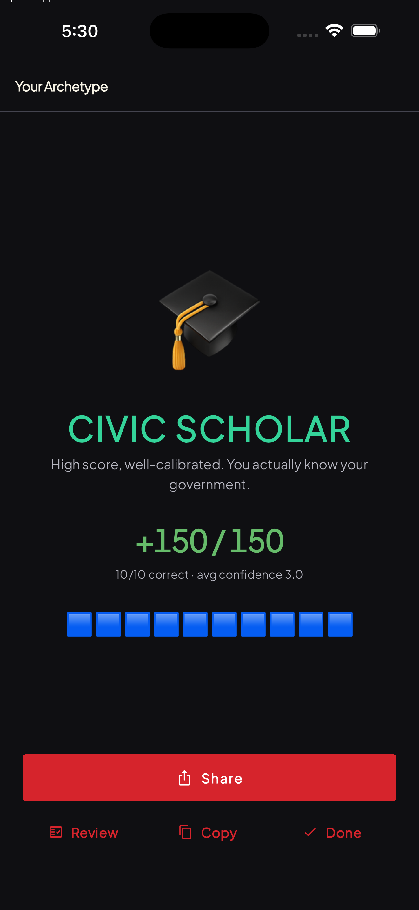
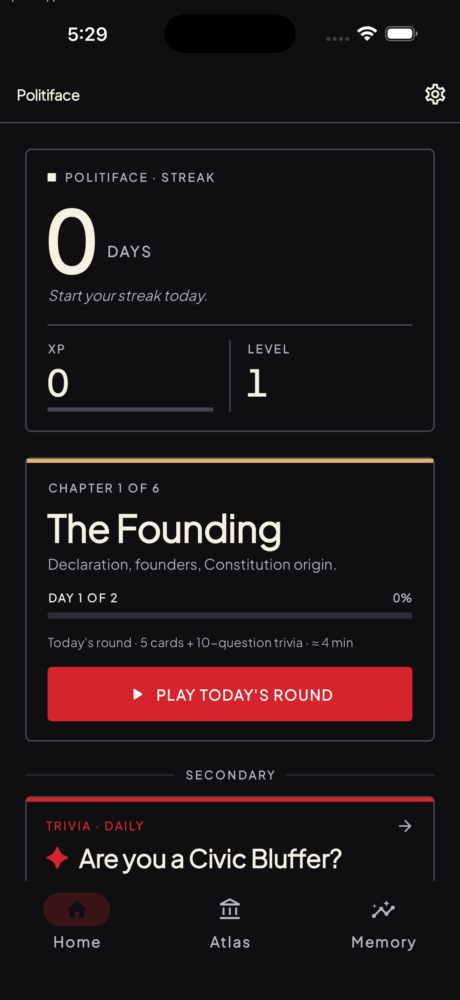
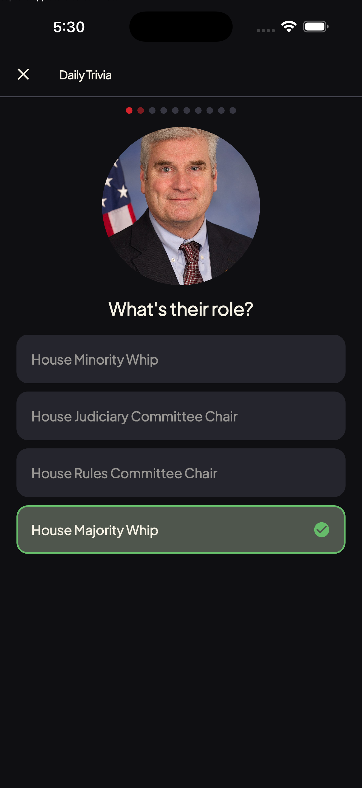
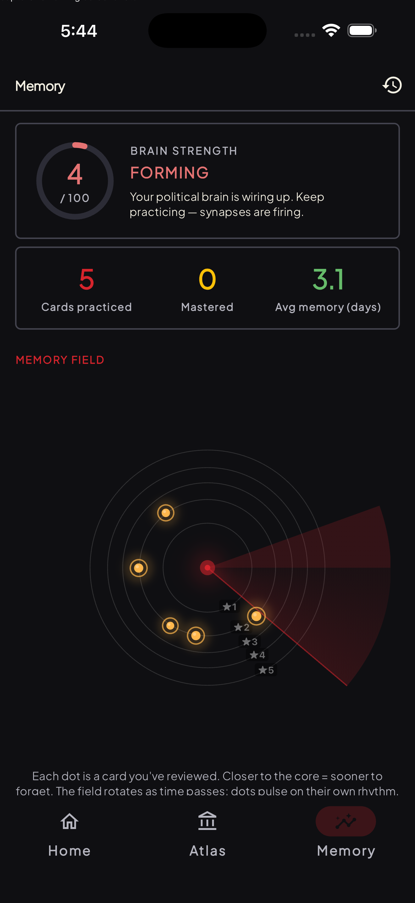
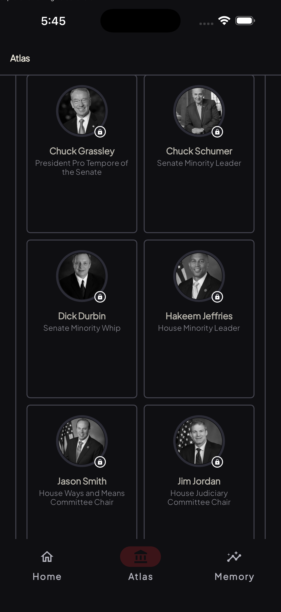

Politiface is supplemental practice students choose: a cited FCLE question bank, full-length mock exams, and a living reference covering every member of Congress. Five minutes a day, tuned to your memory.


Politiface pairs a proven spaced-repetition engine with cited practice questions and a reference layer that stays current with the government it describes.
80 practice questions across the exam's four competencies, each one written from primary public sources and citation-backed. Weak-area practice targets the domains you miss most.
Take a full-length mock exam with the same structure as the real thing, then see readiness broken down by domain. The built-in exam blueprint maps all 32 official objectives.
All 537 members of Congress with offline profiles, plus executive orders from the Federal Register, recent laws, and a cited civics vocabulary. Browsable, searchable, sourced.
A live civic feed of what the government is actually doing: new executive orders, bills moving through Congress, and laws as they are signed. Facts, not takes.
Join your class with a code and compete on the same board. Finish a run, share your score, and challenge a friend to beat it.
Powered by FSRS, the algorithm behind Anki. Politiface predicts when you are about to forget something and surfaces it just before you do. Every review tightens the schedule.
Cited questions organized under the exam's four competencies and the 32 official objectives behind them.
A full-length run with the same domain mix as the real exam, so nothing on test day is a surprise format.
A readiness view for each domain shows what is solid and what needs work, and weak-area practice takes you straight there.
Politiface is independent, supplemental practice that students choose. It is not affiliated with, or endorsed by, the Florida Department of Education or the official examination.
A daily round teaches a handful of faces and facts, then quizzes you with confidence-scored questions. The Memory tab shows your knowledge crystallizing in real time.

Instant reveal on every answer, green when you nail it.

A live read on what's forming, crystallizing, and mastered.

Every official, by branch, with a mastery ring on each face.
The civics core is free. No signup wall, no tracking, no takes: just cited facts, honest practice, and a memory engine that makes them stick.